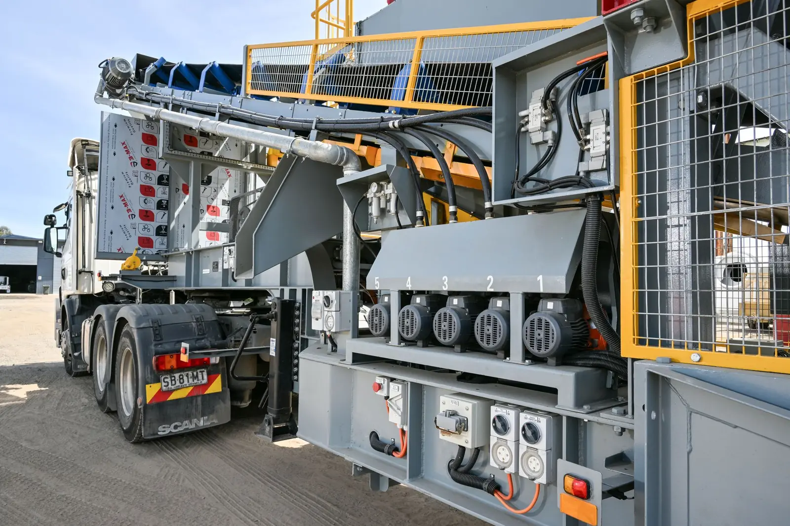
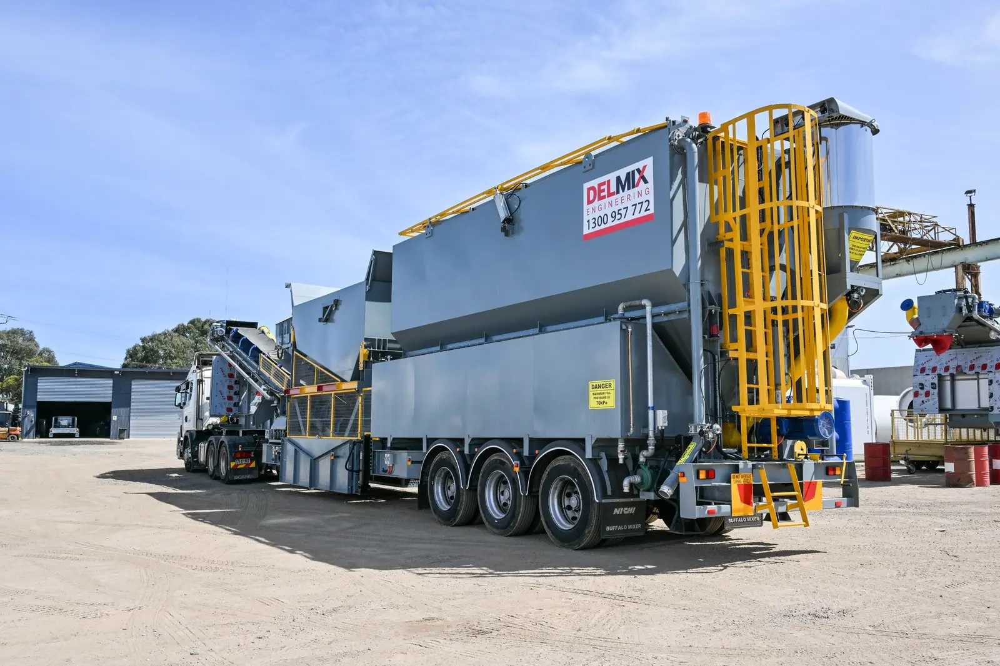

Spare parts, repairs and servicing
Delmix is committed to fully supporting our products.
We utilise the experience and expertise of a number of service partners across Australia, and carry a wide range of spare parts for both concrete mixers and batching plants.
Service partners
- WA
Lovick Fabrication
- QLD
Kingy's Enterprises
- NSW/ACT
Magnum Steel
- VIC
Nichi Service Centre
Parts enquiries
Need a part or a service call?
Email us with your mixer or plant details and the part you are after, and the team will come back to you.

New from Delmix
CreteAway+. A smarter way to clean, a better way to protect.
A premium concrete removal system that helps concrete producers remove build-up effectively, while reducing the risks and hidden costs associated with hydrochloric acid cleaners. Developed in the United Kingdom and now produced under licence in South Australia.
- Low corrosive formula
- Biodegradable
- Safer for people and the environment
- Effective concrete removal

Get in touch
Let's talk about your next project
Reach out to the Delmix team to discuss tailored solutions that support your operations.
1300 957 772 Make an enquiry